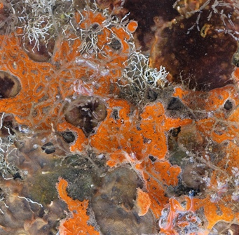
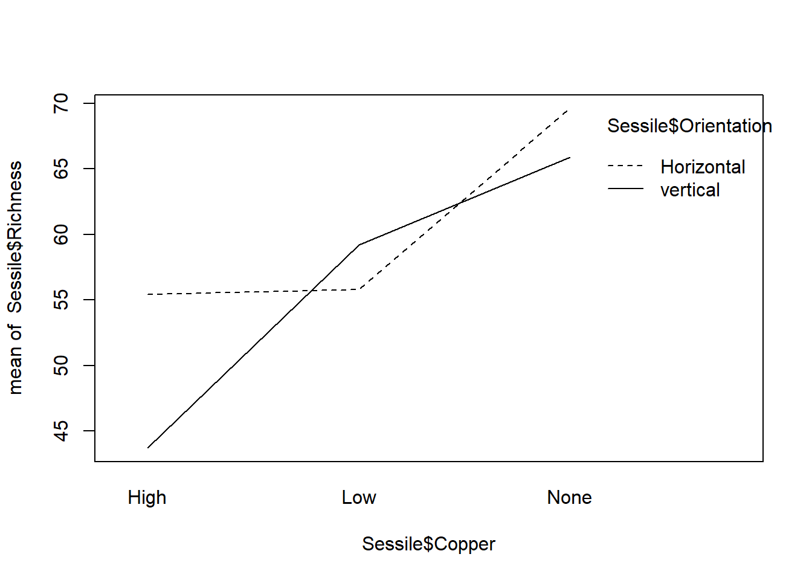
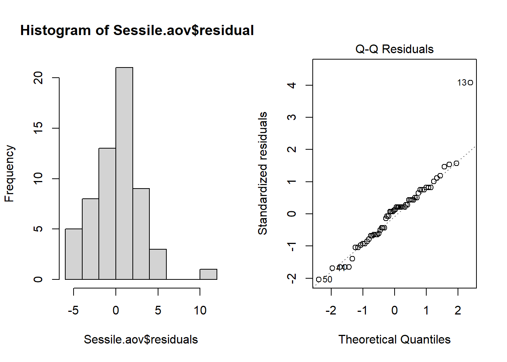
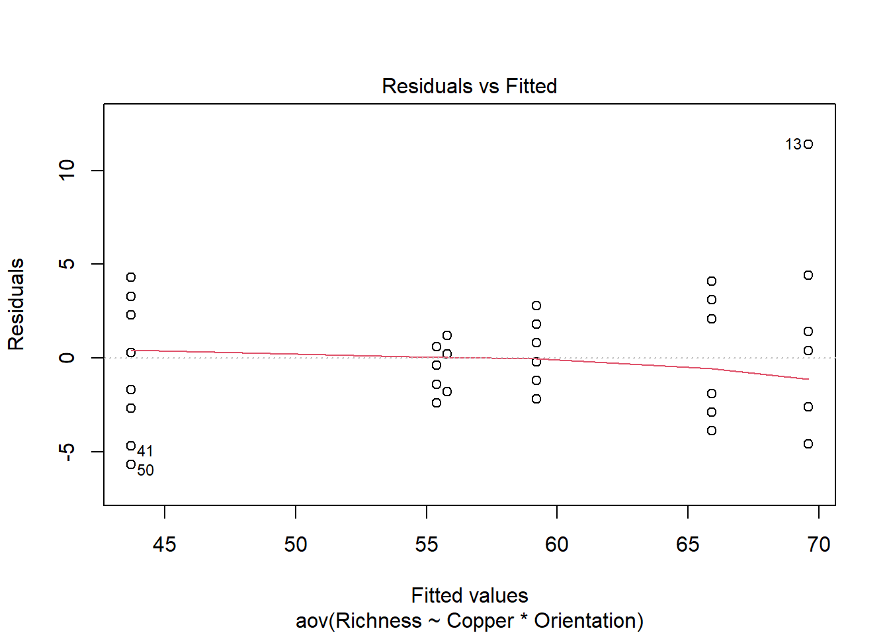
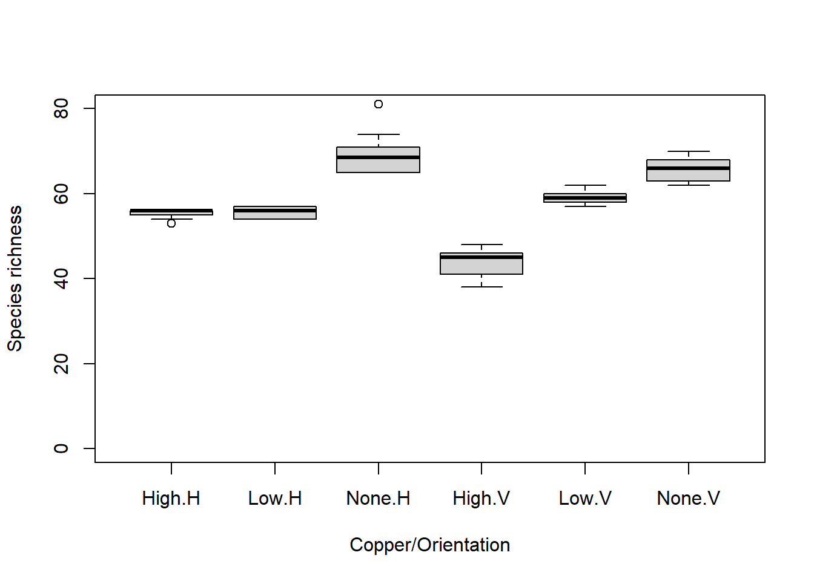

Sessile <- read.csv(file = "Sessile.csv", header = TRUE)
str(Sessile)ANOVA Factorial
El análisis de varianza (ANOVA) es una de las técnicas más utilizadas en las ciencias biológicas y ambientales. El ANOVA se utiliza para contrastar una variable dependiente continua y en diferentes niveles de una o más variables independientes categóricas x. Las variables independientes se denominan factor o tratamiento, y las diferentes categorías dentro de ese tratamiento se denominan niveles. Aquí consideraremos diseños con dos o más factores que se aplican a las unidades experimentales (lee primero la página sobre ANOVA de un factor si no estás familiarizado/a con el ANOVA).
Frecuentemente, queremos probar diferencias en una variable de respuesta debido a dos o más factores. Estos diseños experimentales o de muestreo nos permiten probar los efectos de cada uno de estos factores por separado (llamados efectos principales) y probar si los dos factores interactúan entre sí. Para estos diseños, utilizamos versiones más complejas del ANOVA que el diseño más simple que prueba los efectos de un solo factor.

Consideremos un ejemplo en el que un investigador está probando los efectos de la contaminación por metales en el número de especies encontradas en invertebrados marinos sésiles (esponjas, briozoos y ascidias, entre otros). Les gustaría saber si el cobre reduce la riqueza de especies, pero también saben que la riqueza de invertebrados puede depender de si el sustrato es vertical u horizontal. En consecuencia, llevaron a cabo un experimento en el que se registró la riqueza de especies en muestras replicadas en cada una de las seis combinaciones de enriquecimiento de cobre (“Ninguno”, “Bajo”, “Alto”) y orientación (“Vertical”, “Horizontal”). El diseño experimental se denomina factorial porque todos los niveles de un tratamiento están representados en todos los niveles del otro tratamiento (también llamado ortogonal).
El ANOVA factorial probará: * si hay diferencias en la riqueza entre los tres niveles de enriquecimiento de cobre * si hay diferencias en la riqueza entre los dos niveles de orientación del sustrato * si hay alguna interacción entre el cobre y la orientación
Tienes tres hipótesis nulas: * no hay diferencia entre las medias para cada nivel de cobre, Ho: \(\mu_{Ninguno} = \mu_{Bajo} = \mu_{Alto}\)
- no hay diferencia entre las medias para cada nivel de orientación, Ho: \(\mu_{Vertical} = \mu_{Horizontal}\)
- no hay interacción entre los factores
Esto es mucho mejor que ejecutar dos ANOVAs separados de un solo factor que contrasten los efectos del cobre para cada nivel de orientación, porque se obtiene más potencia estadística (mayor número de grados de libertad) para las pruebas de interés y se obtiene una prueba formal de la interacción entre los factores, lo cual suele ser científicamente interesante.
Ten en cuenta que un ANOVA es un modelo lineal, al igual que la regresión lineal, excepto que las variables predictoras son categóricas en lugar de continuas. Con dos variables predictoras, el modelo lineal es:
\[y_{ijk} = \mu + \alpha_i + \beta_j + (\alpha\beta)_{ij} + \varepsilon_{ijk}\]
donde \(\mu\) es la media general, \(\alpha_i\) es el efecto del i-ésimo grupo del primer factor, \(\beta_i\) es el efecto del j-ésimo grupo del segundo factor y \((\alpha\beta)\) es la interacción.
Aunque tenemos dos factores y un efecto de interacción, esto requiere ajustar más de 3 parámetros en nuestro modelo debido a que tenemos 3 niveles del Factor A (Cobre) y 2 niveles del Factor B (Orientación) (¡si puedes determinar cuántos parámetros deben ajustarse en este modelo, oficialmente eres un aficionado a la estadística! Esto es complicado incluso para los que están “en el saber”).
Con dos factores, el ANOVA divide la varianza total en un componente que puede explicarse mediante la primera variable predictora (entre los niveles del tratamiento A), un componente que puede explicarse mediante la segunda variable predictora (entre los niveles del tratamiento B), un componente que puede explicarse mediante la interacción y un componente que no puede explicarse (dentro de los niveles, la varianza residual). La estadística de prueba F se calcula tres veces para probar cada una de las hipótesis nulas. Para dos factores fijos, las razones F son:
\[F = \frac{MS_{A}}{MS_{dentro}}\]
\[F = \frac{MS_{B}}{MS_{dentro}}\]
\[F = \frac{MS_{AB}}{MS_{dentro}}\]
donde MS son las medias cuadráticas, una medida de variación. La probabilidad de obtener el valor observado de F se calcula a partir de la distribución de probabilidad conocida de F, con dos grados de libertad (uno para el numerador = el número de niveles - 1) y uno para el denominador. Ten en cuenta que estas razones F cambiarán si alguno de los factores es aleatorio (ver más abajo la distinción entre factores fijos y aleatorios).
Ejecutando el análisis
Tu conjunto de datos debe estar formateado de manera que las mediciones de cada réplica sean una fila y cada una de las variables sea una columna, correspondiendo a la variable dependiente y, el Factor A y el Factor B.
Descarga el conjunto de datos de muestra Sessile.csv, e impórtalo a R. Verifica que tus variables predictoras sean factores utilizando la función str.
Con nuestras variables predictoras asignadas correctamente como factores, ahora podemos realizar el análisis. Al igual que con otros tipos de modelos lineales, tenemos una fórmula del modelo con la variable dependiente, y, a la izquierda del ~ y las variables predictoras a la derecha. Para este diseño de dos factores, utilizamos:
Sessile.aov <- aov(Richness ~ Copper * Orientation, data = Sessile)Ten en cuenta que al especificar un modelo con * entre los dos predictores, R automáticamente incluye tanto las variables como su interacción. Este mismo modelo también se puede escribir de la siguiente manera:
Sessile.aov <- aov(Richness ~ Copper + Orientation + Copper:Orientation, data = Sessile)El resultado de este análisis se puede ver utilizando la función summary en el objeto creado.
summary(Sessile.aov)Exactamente el mismo modelo también se puede ejecutar utilizando la función de modelo lineal, lm.
Sessile.lm <- lm(Richness ~ Copper * Orientation,
data = Sessile)
anova(Sessile.lm)Interpretación de los resultados
Df Sum Sq Mean Sq F value Pr(>F)
Copper 2 3330 1665.0 192.53 < 2e-16 ***
Orientation 1 240 240.0 27.75 2.46e-06 ***
Copper:Orientation 2 571 285.3 33.00 4.34e-10 ***
Residuals 54 467 8.6
---
Signif. codes: 0 '***' 0.001 '**' 0.01 '*' 0.05 '.' 0.1 ' ' 1El resumen de un objeto ANOVA es una tabla con los grados de libertad (Df), sumas de cuadrados (Sum Sq), cuadrados medios (Mean Sq) para cada una de las variables predictoras (es decir, la variación entre los niveles de tus tratamientos), su interacción y para los residuos (es decir, la variación dentro de los niveles). También se presentan la estadística de prueba, el valor de F y su valor p asociado (Pr(>F)).
Verifica que tengas los grados de libertad correctos. Para un diseño de dos factores con factores fijos, son los siguientes: * Factor A: a - 1 (donde a = número de niveles del Factor A) * Factor B: b - 1 (donde b = número de niveles del Factor B) * Interacción (AB): (a-1)(b-1) * Residual: ab(n - 1) (donde n = tamaño de la muestra)
Las sumas de cuadrados y cuadrados medios son medidas de variación. Hay tres estadísticas F, correspondientes a una prueba de cada uno de los efectos principales y una para la interacción. Los valores p son las probabilidades de los valores observados de F de la distribución F (con los grados de libertad dados).
En este ejemplo, hay evidencia sólida para rechazar las tres hipótesis nulas: * que todos los niveles del tratamiento de cobre son iguales (P < 0.001), * que las orientaciones vertical y horizontal son iguales (P < 0.001) * que no hay interacción entre el cobre y la orientación (P < 0.001)
Una interacción significativa significa que el efecto de un factor depende del otro. En este ejemplo, significaría que el efecto del cobre no fue consistente entre los hábitats verticales y horizontales. En consecuencia, la interpretación de los efectos principales se vuelve más compleja. Consulta Entendiendo las interacciones para obtener más ayuda sobre la interpretación de las interacciones en modelos lineales. Una forma rápida de ayudarte a entender una interacción, si la tienes, es examinar un gráfico de interacciones.
interaction.plot(Sessile$Copper, Sessile$Orientation, Sessile$Richness)
Aquí puedes ver que el efecto del cobre (una disminución en la riqueza de especies) es más pronunciado en los hábitats con orientación vertical, y que la diferencia entre los dos hábitats cambia con la exposición al cobre.
Comparaciones múltiples. Si detectas diferencias significativas en el ANOVA, entonces nos interesa saber exactamente qué niveles difieren entre sí y cuáles no. Recuerda que un valor p significativo en la prueba que acabas de realizar rechazaría la hipótesis nula de que las medias son iguales en todos los grupos, pero no identificaría cuáles son diferentes entre sí. Si no hay interacción, puedes realizar una prueba post-hoc en cada uno de los efectos principales (solo necesario si hay más de dos niveles para un efecto). Si hay una interacción, deberás considerar pruebas post-hoc que contrasten las medias de todas las combinaciones de ambos factores.
Supuestos a verificar
Los supuestos del ANOVA factorial son los mismos que para todos los modelos lineales, incluidos los ANOVA de un solo factor más simples (consultar ANOVA: un solo factor), que son independencia, normalidad y homogeneidad de varianzas. También debemos considerar dos aspectos nuevos:
si tus factores son fijos o aleatorios, y
si tu diseño de muestreo o experimental está balanceado (es decir, tiene el mismo número de réplicas en cada combinación de tratamientos).
Factores fijos y aleatorios. Existe una distinción importante entre factores cuyos niveles son los únicos de interés (llamados fijos) y factores cuyos niveles se muestrean de una colección más amplia de posibles niveles (llamados aleatorios). Por ejemplo, si repitiéramos el experimento anterior en tres sitios diferentes en el puerto de Sídney, elegidos entre muchos posibles sitios, consideraríamos el sitio como un factor aleatorio. No nos interesan esos sitios en particular, pero nos gustaría saber si nuestros tratamientos experimentales fueron consistentes en los sitios. Por otro lado, si solo estás interesado en Darling Harbour y Circular Quay, entonces estos dos podrían considerarse dos niveles de un factor fijo. Tratar los sitios como un factor fijo en ese caso significa que tus conclusiones no se deben extrapolar a otros posibles sitios, sino que se limitan a esos sitios en particular.
Estadísticamente, hay una gran diferencia entre factores fijos en los que has medido todos los niveles posibles de interés (por ejemplo, control vs. un solo tratamiento) y factores aleatorios en los que los niveles se muestrean de todos los posibles niveles. En el análisis de varianza, todo esto importa porque las pruebas F que se utilizan para probar tus hipótesis se construyen de manera diferente según los factores sean fijos o aleatorios. En el ejemplo anterior, todos los factores eran fijos y el denominador de todas las pruebas F fue \(MS_{within}\). En modelos con todos los factores aleatorios y modelos con una combinación de factores fijos y aleatorios (llamados modelos de efectos mixtos), se utilizan otros componentes de la variación como denominadores en las pruebas F.
Si tienes factores aleatorios, necesitarás leer más que esta página de ayuda para establecer las razones F correctas para tu diseño, y es posible que necesites calcularlas manualmente. Ten en cuenta que el código presentado solo dará pruebas F correctas para diseños con todos los factores fijos. También debes considerar seriamente analizar tus datos como un modelo mixto.
Diseños balanceados y desbalanceados. Idealmente, el ANOVA factorial se debería realizar con un diseño balanceado, es decir, con el mismo número de réplicas en cada combinación de factores. Los diseños balanceados tienen menos probabilidades de verse afectados por pequeñas desviaciones de las suposiciones de normalidad y homogeneidad de varianza. Desafortunadamente, en la práctica es común encontrarse con diseños desbalanceados, donde se tienen números desiguales de réplicas para cada nivel (por ejemplo, mal tiempo impidió muestrear el segundo sitio de manera intensiva, un voluntario perdió la hoja de datos, etc.).
Los diseños desbalanceados son más susceptibles a violar las suposiciones del ANOVA y no hay una única forma de particionar el \(SS_{total}\) en los componentes de efecto principal e interacción. Las funciones aov y lm en R utilizan lo que se conocen como sumas de cuadrados de Tipo I, donde los términos del modelo se ajustan secuencialmente (es decir, cuánta variación se explica por el factor A, luego cuánta variación adicional se explica al agregar el factor B). Esto significa que el orden de los términos en el modelo importa: las fórmulas del modelo Y ~ A + B + A:B y Y ~ B + A + B:A darán resultados diferentes.
Hay bastante debate al respecto en la literatura estadística, pero muchos recomiendan utilizar lo que se conocen como sumas de cuadrados de Tipo II o Tipo III para diseños desbalanceados. Otros paquetes de software como SPSS, SYSTAT y Minitab utilizarán automáticamente sumas de cuadrados de Tipo III, donde el orden de los términos en el modelo no importa. Para acceder a estas sumas de cuadrados en R, podemos utilizar la función Anova del paquete car.
Normalidad. La suposición de normalidad se puede verificar mediante un histograma de frecuencia de los residuos o mediante un gráfico de cuantiles donde los residuos se representan en función de los valores esperados de una distribución normal. El histograma de los residuos debería seguir una distribución normal. Si los puntos en el gráfico de cuantiles se encuentran principalmente en la línea, los residuos están distribuidos de manera normal. Ambos gráficos se pueden obtener a partir del objeto de modelo creado por la función aov.
par(mfrow = c(1, 2))
hist(Sessile.aov$residuals)
plot(Sessile.aov, which = 2)
Violaciones de la normalidad se pueden solucionar mediante transformaciones o mediante el uso de una distribución de errores diferente en un modelo lineal generalizado (GLM).
Homogeneidad de varianza. La suposición de homogeneidad de varianza, es decir, que la variación en los residuos es aproximadamente igual en todo el rango de la variable predictora, se puede verificar trazando los residuos en función de los valores ajustados del objeto de modelo aov.
plot(Sessile.aov, which = 1)
Varianzas heterogéneas se indican por un patrón no aleatorio en la gráfica de residuos frente a los valores ajustados. Busca una distribución uniforme de los residuos en el eje y para cada uno de los niveles en el eje x. Una distribución en forma de abanico con mayor varianza en valores más altos en el eje x es un problema común cuando los datos están sesgados. Consulta el módulo de pruebas de suposiciones de los modelos lineales para obtener más información. Si hay patrones fuertes, una solución potencial es transformar la variable de respuesta y. Si esto no soluciona el problema, la mejor solución es utilizar una distribución de errores diferente en un modelo lineal generalizado (GLM).
Independencia. ANOVA asume que todas las medidas replicadas son independientes entre sí (es decir, igualmente probables de ser muestreadas de la población de valores posibles para cada nivel). Este problema debe tenerse en cuenta en la etapa de diseño. Si los datos están agrupados de alguna manera (por ejemplo, la mitad de las muestras de invertebrados medidas en un momento, y luego la otra mitad medida más tarde), se necesitan diseños más complejos para tener en cuenta factores adicionales (por ejemplo, un diseño con un factor adicional de tiempo de muestreo).
Existen diversas medidas para tratar la falta de independencia. Estas incluyen asegurarse de que todos los predictores importantes estén en el modelo, promediar las observaciones anidadas o utilizar un modelo mixto.
Comunicación de los resultados
Escrita. Los resultados de los efectos principales y cualquier interacción deben describirse en el texto de una sección de resultados. Cada prueba F se puede describir en el texto, por ejemplo: “El tratamiento de cobre y la orientación del sustrato interactuaron para afectar a la especie de invertebrados sésiles (F = 19.33, df = 2,54, p < 0.001)”. Alternativamente, todas las pruebas se pueden incluir en una tabla similar a la que se muestra en la salida después de summary(Sessile.aov). La descripción de las pruebas principales se seguiría de una descripción de los resultados post hoc si se utilizan.
Recuerda que la interpretación de los efectos principales se complica cuando hay una interacción significativa (ver arriba). En este ejemplo, aunque el cobre redujo la riqueza de especies, ese efecto no fue consistente entre los dos hábitats. En otros escenarios con una interacción, es posible que el cobre afecte la riqueza en un hábitat pero no en otro, lo que impide hacer una afirmación simple como “el cobre redujo la riqueza de especies” porque no siempre sería cierto.
Visual. Un diagrama de caja o un gráfico de columnas con barras de error son adecuados para contrastar una variable continua en diferentes niveles de una variable categórica. Consulta los módulos de gráficos para obtener versiones listas para su publicación de estas figuras.
boxplot(Richness ~ Copper * Orientation,
data = Sessile,
names = c("High.H", "Low.H", "None.H", "High.V", "Low.V", "None.V"),
ylab = "Species richness",
xlab = "Copper/Orientation",
ylim = c(0, 80))
Más ayuda
Escribe ?aov o ?lm para obtener la ayuda de R sobre estas funciones.
Quinn y Keough (2002) Experimental design and data analysis for biologist. Cambridge University Press. Capítulo 9: Análisis de varianza multifactorial.
McKillup (2012) Statistics explained. An introductory guide for life scientists. Cambridge University Press. Capítulo 13: Análisis de varianza de dos factores.
Underwood (1997) Experiments in ecology: Their logical design and interpretation using analysis of variance. Cambridge University Press.
Autores: James Lavender & Alistair Poore
Año: 2016
Última actualización: Nov. 2023